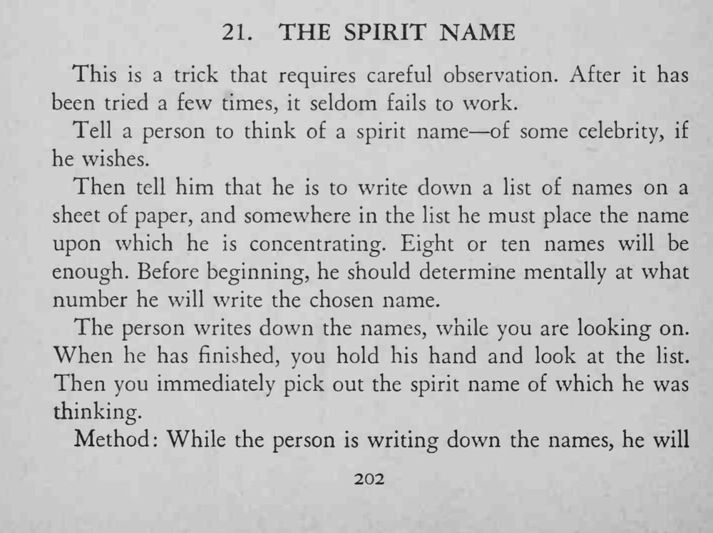
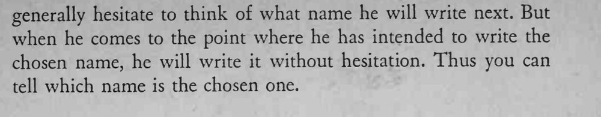

观众心里想好一位名人的「灵体名字」，再把它混进一列人名中写下；魔术师只看了看，就把他想的那一个名字挑了出来。
关键在耐心观察运笔的迟疑与流畅，别让人发现你在看笔迹。


This is a trick that requires careful observation. After it has been tried a few times, it seldom fails to work. Tell a person to think of a spirit name of some celebrity, if he wishes. Then tell him that he is to write down a list of names on a sheet of paper, and somewhere in the list he must place the name upon which he is concentrating. Eight or ten names will be enough. Before beginning, he should determine mentally at what number he will write the chosen name. The person writes down the names, while you are looking on. When he has finished, you hold his hand and look at the list. Then you immediately pick out the spirit name of which he was thinking. Method: While the person is writing down the names, he will when he comes to the point where he has intended to write the chosen name, he will write it without hesitation. Thus you can tell which name is the chosen one.